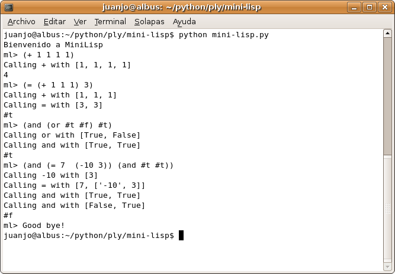
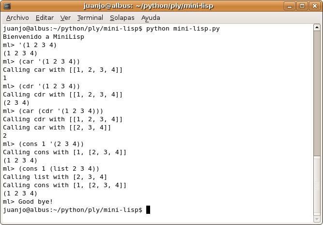
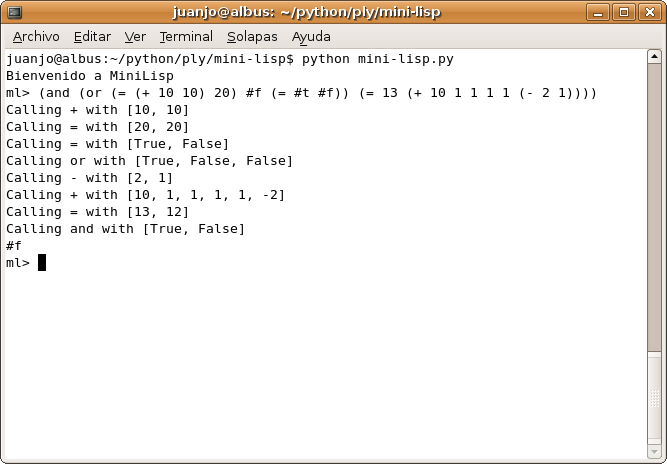
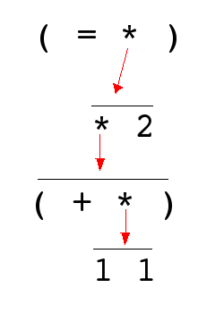

Free Fonts
O fuentes libres. Otro recurso:
http://myfreetemplatehome.com/free_tools/free-font-1-.htmlMás fuentes? Por favor dejá los enlaces como comentarios.
Contenido relacionado: Imágenes libres, Música libre.
O fuentes libres. Otro recurso:
http://myfreetemplatehome.com/free_tools/free-font-1-.htmlMás fuentes? Por favor dejá los enlaces como comentarios.
Contenido relacionado: Imágenes libres, Música libre.
Hace más de un año, mientras aprendía PyGame escarbé toda la Internet en busca de imágenes que pueda usar sin problemas en mis juegos libres.
Los siguientes links son de lo mejor que encontré.
http://www.pixelperfectdigital.com/
Espero te sirvan. Tenés otro enlaces? Dejalos como comentarios.
Los siguientes posts tiene la misma historia.
Contenido relacionado: Música libre, Fuentes libres.
Estoy leyendo el libro Structure and Interpretation of Computer Programs.
De su primer capítulo:
Vamos a estudiar la idea de proceso computacional. Los procesos computacionales son seres abstractos que habitan las computadoras. A medida que evolucionan, los procesos manipulan otras cosas abstractas llamadas datos. La evolución de un proceso es dirigida por un conjunto de reglas llamado programa. Las personas crean programas para dirigir procesos. En efecto, conjuramos los espíritus de las computadoras con nuestros hechizos.
Un proceso computacional es, en efecto, como la idea que tiene un hechicero de un espíritu. No puede ser visto o tocado. No está compuesto de materia. Sin embargo, es muy real. Puede realizar trabajo intelectual. Puede responder preguntas. Puede afectar el mundo desembolsando dinero en un banco o controlando un brazo robótico en una fábrica. Los programas que usamos para conjurar procesos son como los conjuros de un hechicero. Ellos son están hechos a partir de expresiones simbólicas y esotéricos lenguajes de programación que prescriben las tareas que queremos que nuestros procesos realicen.
Un proceso computacional, en una computadora funcionando correctamente, ejecuta programas en forma precisa y exacta. Así, al igual que un aprendiz de hechicería, los programadores novicios deben aprender a entender y anticipar las consecuencias de sus conjuros. Incluso los errores pequeños (usualmente llamados bugs) en los programas pueden tener complejas e inesperadas consecuencias.
Afortunadamente, aprender a programas es considerablemente menos peligroso que aprender hechicería, por que los espíritus con los que lidiamos están convenientemente contenidos de forma segura. La programación en el mundo real, sin embargo, requiere cuidado, experiencia y sabiduría. Un pequeño error en un programa para diseño asistido por computadora, por ejemplo, puede llevar al colapso catastrófico de un avión o un dique o a que un robot industrial se auto destruya.
Los grandes ingenieros de software tienen la habilidad de organizar los programas de forma tal que que pueden estar razonablemente seguros de que el proceso resultante realizará las tareas que se deseaban. Pueden visualizar el comportamiento de sus sistemas. Saben como estructurar los programas de forma que los problemas no anticipados no lleven a consecuencias catastróficas, y cuando los problemas aparecen, pueden debugear sus programas. Los sistemas computacionales bien diseñados, como los automóviles o reactores nucleares bien diseñados, son diseñados en forma modular, de esta forma las partes pueden ser construidas, reemplazadas y debugeadas en forma separada.
Acabo de crear un sitio web con todos los ejemplos de PLY que acompañan su distribución.
En distribuciones derivadas de Debian los pueden encontrar en:
/usr/share/doc/python-ply-doc/examples/
luego de haber instalado python-ply y su documentación:
apt-get install python-ply python-ply-doc
Los archivos .py de los ejemplos se encuentran en una versión html con su sintaxis coloreada. Esto lo hice con el comando pygmentize. Para poder usarlo, en Debian y similares, debemos instalarlo el paquete python-pygments. Más información.
En particular utilicé OpenOffice para editar el README que acompaña la distribución de los ejemplos y crear una página html y este oneliner para crear todos los .py.html de una pasada:
for d in ls -d * | grep -v index.html; do cd $d; for f in ls *.py; do pygmentize -f html -O full -o $f.html $f; done; cd ..; done
Espero sea útil, cree el sitio a partir de una sugerencia en la lista de correos de PLY.
Hola! mi nombre es Juanjo Conti y tal vez me recuerden de críticas a libros de Dan Brown como El Código Da Vinci no compila.
En esta ocasión me gustaría comentar detalles que se presentan cuando uno lee su primera novela La Fortaleza Digital, algunos incluso centrales en la trama (?).
Antes de empezar les cuento que, más allá del chiste inicial, éste es el primer libro que leo de este autor. Sé que existen otros llamados La Conspiración y Ángeles y Demonios y también sé que no pienso gastar mi tiempo con El Código Da Vinci.
Cuando terminé de leer el libro busqué en Internet algunas críticas, lo siguiente si bien no hace referencia a cuestiones técnicas (éstas fueron las que más me llamaron la atención) es una buena introducción para derrumbar La Fortaleza Digital.
En principio, podríamos decir que "Fortaleza Digital" no es una novela de Dan Brown. Es la novela de Dan Brown. Quiero decir que cualquier lector que haya sufrido las restantes obras del autor encontrará en "Fortaleza Digital" exactamente lo mismo. Y no me refiero a que sus personajes sean tan estereotipados como siempre, sus situaciones igual de forzadas, o sus tramas lo mismo de previsibles, no. Quiero decir que son exactamente los mismos que en las anteriores novelas.De modo que si usted ha leído ya algo de Dan Brown sabrá sin necesidad de abrir el libro, por ejemplo, cómo son los personajes. Exacto: los buenos son un hombre y una mujer jóvenes, altos, guapos e inteligentísimos. Los malos se dividen, como no podía ser menos, en un casi anciano jefe, que asume un papel aparentemente protector hacia la chica pero que resulta ser un malvado de tomo y lomo -aunque por una buena causa, eso sí- y un asesino sin escrúpulos que, para no variar, sufre una tara física (en este caso es sordo). Y a su alrededor, como también es costumbre de la casa, pululan una serie de personajes para los que Brown no parece decidirse a otorgarles un papel protagonista o secundario, pero que también responden fielmente a los tópicos más tontos que podamos imaginar: el "gurú" informático, devorador compulsivo de pizzas e incapaz de someterse a disciplina alguna; la jefe de seguridad, de constancia implacable e instinto infalible; el asistente del Director de la NSA, indeciso y timorato... Da la impresión de que Dan Brown tuviese acceso a la papelera a donde van a parar los personajes que, por tópicos, planos o absurdos, no quieren emplear los novelistas de verdad.
Pero el hecho de que los personajes sean tópicos y sencillotes no quiere decir que Brown sea capaz de manejarlos con habilidad. Más bien todo lo contrario. Para mostrarnos cómo es la protagonista, Susan Fletcher, Brown hace que un guardia de seguridad, contemplando sus piernas, murmure para sí
"Es difícil creer que tengan encima un coeficiente intelectual de 170".La frase, a primera vista, parece sugerirnos tan sólo que Susan es guapa y es inteligente, cualidades que por lo visto a Brown le parecen raramente compatibles. Pero basta avanzar un poquito en el libro para darnos cuenta de la profunda verdad que encierran esas palabras: en efecto, el comportamiento de Susan hace difícil de imaginar que tenga un CI de 170, o de 17, y a veces no parece ni llegar a 1,7. A lo largo del libro, la extraordinaria criptóloga de la NSA que pretende vendernos la novela se nos revela como una pobre tonta incapaz de darse cuenta de una trama que el lector va adivinando sin ningún esfuerzo. Eso sí, la chica muestra una gran capacidad de asombro, repitiéndose a sí misma tres veces las cosas para recalcarnos lo sorprendentes que resultan esos giros argumentales que vemos venir desde hace ocho capítulos. Y si como detective no es gran cosa, como criptóloga tampoco crean que es nada del otro mundo: las últimas páginas son un suplicio para el lector, que ve cómo transcurren los párrafos sin que la experta en claves sea capaz ni siquiera de reconocer las que cualquiera ha podido comprender y descifrar al primer vistazo.
Fuente: http://yamato1.blogspot.com/2006/02/fortaleza-digital.html
Las siguientes observaciones están basadas en la edición en español de la editorial Umbriel, ISBN 84-89367-01-9.
En el capítulo 4, página 36 del libro el autor dice que en los años 90 las claves de acceso tenían más de 50 caracteres de longitud y empleaban 256 caracteres ASCII (letras, números y símbolos). Completa diciendo que las posibilidades diferentes se acercan a 10120 y aclara: 10 seguido de 120 ceros.
Vamos por partes:
>>> 256**56
726838724295606890549323807888004534353641
360687318060281490199180639288113397923326
191050713763565560762521606266177933534601628614656L
>>> 256**56 - 10**120
726838724295605890549323807888004534353641
360687318060281490199180639288113397923326
191050713763565560762521606266177933534601628614656L
>>> 10**120
100000000000000000000000000000000000000000
000000000000000000000000000000000000000000
0000000000000000000000000000000000000L
>>> a = 256**56
>>> b = 10**120
>>> a < b
False
>>> a > b
True
>>> mil = range(0,1000)
>>> for n in mil:
if a < 10**n:
print n
break
135
25656 está entre 10134 y 10135.En el capítulo 5, página 45 bajo el título Algoritmos de encriptación se menciona:
La base de toda la novela es un supuesto código indescifrable. La historia lo sustenta mencionando a un oscuro matemático y un oscuro paper en un oscuro congreso. Nada de esto existe. Una discusión al respecto en http://www.derkeiler.com/Newsgroups/sci.crypt/2005-08/0049.html
Julio César, explicó, fue el primer escritor de códigos secretos de la historia. Cuando sus emisarios empezaron a caer en emboscadas, y sus mensajes comenzaron a ser robados, diseñó un método rudimentario de codificar sus órdenes. Reordenó el texto de sus mensajes de manera que la correspondencia parecía absurda. No lo era, claro está. Cada mensaje contenía siempre un número de letras que constituía un cuadrado perfecto (dieciséis, veinticinco, cien), en función de lo que Julio César necesitara decir. Avisó en secreto a sus oficiales de que, cuando recibieran un mensaje absurdo, debían copiar el texto en una tabla con rejilla cuadriculada. Si lo hacían así, y leían de arriba abajo, aparecería un mensaje secreto como por arte de magia.
Esto me sorprendió porque no recordaba que a esto en particular se lo conociera como el Cifrado del César. Por suerte una búsqueda en Wikipedia me confirmó lo que sospechaba.
En criptografía, un cifrado César, también conocido como cifrado por desplazamiento, es una de las técnicas de codificación más simples y más usadas. Es un tipo de cifrado por sustitución en el que una letra en el texto original es reemplazada por otra letra que se encuentra en una posición que está un número determinado de espacios más adelante en el alfabeto. Por ejemplo, con un desplazamiento de 3, la A sería reemplazada por la D (situada 3 lugares a la derecha de la A ), la B sería reemplazada por la E, etcétera. Este método debe su nombre a Julio César, que lo usaba para comunicarse con sus generales.
Me llamó la atención como a lo largo del libro se subestima a la agencia norteamericana: contraseñas de 5 caracteres? un piso completo de gente y nadie sabe cuestiones básicas sobre los elementos químicos? toda un área está por explotar y nadie se entera? Acceso FTP a su banco de datos secreto? No puede ser.
Como en la novela NSA son los buenos, EFF (Electronic Frontier Foundation), una organización sin ánimo de lucro con sede en Estados Unidos con el objetivo declarado de dedicar sus esfuerzos a conservar los derechos de libertad de expresión en el contexto de la era digital actual, aparece en todo el libro como una molestia. Tal vez lo sea para ellos, pero los usuarios de Internet tenemos que estarle agradecidos. Por favor considerá hacer una donación para apoyarla.
Los hackers, al igual que las hienas, formaba una gran familia, siempre ansiosos por correr la voz de que había una nueva presa.
Y en otra parte son pintados como tiburones que huelen sangre en el agua. Eso no se parece en nada a lo que es un hacker. Muy por el contrario coincide más con la definición de cracker.
- Necesito acceder a Internet. ¿Qué navegadores tienen instalados? - El mejor es Netscape - dijo Soshi Susan le agarro la mano. - Vamos a navegar
Se ve que para el tiempo en que fue escrita la novela no existía FireFox :)
Al final del libro, luego del Epílogo se presenta un código. En mi libro era:
128 - 10 - 93 - 85 - 10 - 128 - 98 - 112 - 6 - 25 - 126 - 39 - 1 - 68 - 78
Lo primero que hice fue contar los números. 15. Me llamó la atención que la cantidad no fuera un cuadrado perfecto para así aplicar la técnica de armar un cuadrado con los caracteres planteada en el libro. Leyendo en Wikipedia encontré la solución al código:
Luego de finalizar el libro aparece impreso el siguiente codigo:128 - 10 - 93 - 85 - 10 - 128 - 98 - 112 - 6 - 6 - 25 - 126 - 39 - 1 - 68 - 78. Para resolverlo solo debemos anotar la primera letra (de la Edición en Inglés) del capitulo indicado. El código resultante es el siguiente:WECGEWHYAAIORTNUQue casualmente forma un cuadrado perfecto si lo colocamos de esta forma:W E C G E W H Y A A I O R T N Usi lo leemos como indica en el propio libro (de arriba a abajo):WEAREWATCHINGYOUque forma la frase: We are watching you. Te estamos mirando, referido al lema de la NSA que lo controla todo.
¿¿Se dieron cuenta del error?? En mi libro falta un 6!
No dejen de leer el libro, a pesar de ser técnicamente insustentable me entretuvo mucho. Lean con atención y encontrarán muchas otras fallas. No dejen de comentarlas en este post!
Esta novela ha sido criticada por cometer una serie de errores en la ambientación y en la descripción de Sevilla, además de ofrecer una imagen tercermundista de España. Por ejemplo, se dice que el zumo de arándanos es typical spanish, que la policía española es fácilmente sobornable, que los hospitales sevillanos huelen a orina y los enfermos están en catres en vez de en camas, que a la Giralda se sube por escaleras en vez de por rampas, etc. En la edición para España, Dan Brown afirma que estuvo un año como estudiante en la Universidad de Sevilla. Sin embargo, esta institución afirma que Dan Brown no figura en ningún registro y que, si estuvo en esta Universidad, fue acaso en algún curso de verano.
Leer más en PeriodistaDigital.
Al finalizar este artículo encontré uno en inglés que resalta algunos errores que aquí destaco y otros que son exclusivos de la versión en esa lengua :) http://becomingparanoid.com/2006/03/13/digital-fortress-what-dan-brown-got-wrong/
The asteroid to kill this dinosaur is still in orbit.
PLY o python-ply (cómo se llama su paquete en Debian) es una implementación de las herramientas lex y yacc para análisis léxico y sintáctico. Está enteramente escrito en Python y su primera versión fue desarrollado por David Beazley en el año 2001 para ser usado en un curso de Introducción a los Compiladores.
Lex es una creador de analizadores léxicos (lexers). La función principal de un lexer es tomar un flujo de caracteres entrada y devolver un flujo de tokens como salida. Ejemplos de tokens en un programa escrito en algún lenguaje de programación podrían ser: un número, un paréntesis, un identificador o una palabra clave. Por ejemplo: 17, ), miVarible, if.
Para definir los tokens utilizamos expresiones regulares.
Yacc, Yet Another Compilers Compiler, nos permitirá crear un programa que tome un flujo de tokens como entrada y reconozca a partir de ellos un lenguaje. Notemos por ejemplo que si bien if { 555 ;; for printf i++[] es un flujo de tokens válidos de C, no es una sentencia válida del lenguaje como si lo es for(i=0; i<5; i++){}.
Para definir la gramática de un lenguaje de programación vamos a usar una notación conocida como BNF (Backus–Naur form).
Intérpretes de lenguajes de programación como Python o PHP son escritos en C por razones de eficiencia. ¿Vamos a usar Python para escribir uno? Bueno.. ¿por qué no? La filosofía de Python consiste en escribir rápido una solución para un problema y poder probarla enseguida. En el tiempo en que implementás en C una idea podes escribir 3 soluciones diferentes en Python, probarlas y elegir con cual continuar. En caso de que en algún momento se detecte que el programa resultante corre lento (más lento de lo necesario), siempre podés:
El intérprete que voy a construir para aprender ply va a tener sabor a Lisp y va a ser muy sencillo. Va a ser un MiniLisp! En particular:
(fun-name arg [arg]). Esto significa que el intérprete podrá resolver expresiones como (+ 1 1) y responderá 2, (= 1 1) y responderá #t (la forma en que voy a representar el valor de verdad True), pero también (+ 1 2 3 4 5) que da como resultado 15 y (or #t #f #f) que da como resultado #t.(+ 1 (+ 2 2) (- 5 4) 10) que da como resultado 16, (and (= 1 1) #t) que da como resultado #t y (and (or (= (+ 10 10) 20) #f (= #t #f)) (= 13 (+ 10 1 1 1 1 (- 2 1)))) cuyo resultado se deja a cargo del lector para que vaya entrando en clima :)(car '(1 2 3)) obtiene el primer elemento (o cabeza) de la lista '(1 2 3): 1
(cdr '(1 2 3)) obtiene la cola de la lista '(1 2 3): (2 3)
(cons 0 '(1 2 3)) crea una nueva lista con 0 como cabeza y '(1 2 3) como cola: (0 1 2 3)
(cons '(1 2) '(3 4)) da como resultado una lista cuya cabeza es la lista '(1 2) y su cola '(3 4): ((1 2) 3 4)
(concat '(1 2) '(3 4)) para obtener una lista que sea la concatenación de ambas: (1 2 3 4)
(list 1 2 3 4) para crear una lista de elementos: (1 2 3 4)
<li>La implementación tiene solo fines didácticos así que solo trabajará con enteros aunque añadir soporte para números reales (floats) debería ser fácil.</li> <li>No tendrá un manejo de errores muy completo.</li> <li>Pensé varias formas de implementar la función <code>define</code> pero no conseguí que funcione del todo bien :(, así que quité la funcionalidad.</li> <li>Otra función común en las implementaciones de Lisp con la que contará MiniLisp es cond, la cual evalúa su primer argumento y si es verdadero retorna el segundo. Esta función puede usarse para implementar construcciones de control de flujo más complejas como if-else, while o for. Eso si en MiniLisp se pudieran definir funciones :(
(cond (= 1 1) 7) retorna 7
(cond (= 1 2) 7) no retorna nada.PLY consiste en un paquete que contiene los módulos ply y yacc.
En Debian/Ubuntu podemos instalarlo con el comando (como root o mediante sudo)
apt-get install python-ply
Al programa que generará un analizador léxico lo llamé lex.py y consiste en:
import ply.lex as lex
Debemos crear una tupla con todos los nombres de los tokens a reconocer (por convención escribimos los nombres en mayúsculas):
tokens = ('QUOTE', 'SIMB', 'NUM', 'LPAREN', 'RPAREN', 'NIL', 'TRUE', 'FALSE', 'TEXT')
Un diccionario en el cual la clave es una palabra reservada y el valor uno de los tokens de la tupla anterior:
reserved = {
'nil' : 'NIL',
}
En este ejemplo prácticamente no hay palabras reservadas, otros lenguajes podría haber palabras como if, while, for o return.
Lo siguiente es definir las expresiones regulares para cada token. Existen dos formas de hacerlo, mediante strings o mediante funciones.
El primer caso se usa cuando el token no requiere ningún tipo de procesamiento luego de ser econtrado:
t_LPAREN = r'\('
t_RPAREN = r'\)'
t_QUOTE = r'\''
t_TRUE = r'\#t'
t_FALSE = r'\#f'
Notar que se usan raw strings de Python para escribir las expresiones regulares que posteriormente serán compiladas y usadas (PLY utiliza el módulo re en su análisis léxico).
Para los tokens correspondientes a números podemos querer hacer alguna verificación antes de devolverlo, en ese caso la especificación del token puede hacerse mediante una función:
def t_NUM(t):
r'd+'
try:
t.value = int(t.value)
except ValueError:
print "Line %d: Number %s is too large!" % (t.lineno,t.value)
t.value = 0
return t
Notar que en el docstring de la función se debe colocar la expresión regular correspondiente al token.
Otro ejemplo de esto se da para el token SIMBOL, pero con una particularidad. Este token se usa para los nombres de funciones o variables. car, cdr o and son ejemplos de símbolos en MiniLisp.
def t_SIMB(t):
r'[a-zA-Z_+=*-][a-zA-Z0-9_+*-]*'
t.type = reserved.get(t.value,'SIMB') # Check for reserved words
return t
Luego de encontrar una secuencia de caracteres que corresponda con la expresión regular de los símbolos, nos fijamos que no sea una palabra reservada. Si lo es, en t.type se guardará el nombre de token correspondiente, por ejemplo 'NIL', caso contrario 'SIMB'.
Si hubiesemos especificado t_NIL = r'nil' en lugar de usar el diccionario reserved, cadenas de caracteres como nillave (un símbolo válido) serían interpretadas como NIL seguido del símbolo lave.
El orden en que estas definiciones son usadas es el siguiente: primero los strings en orden descendiente de la longitud de la expresión regular y luego las funciones en el orden que fueron escritas.
Archivo completo: lex.py
El código en el que se define la gramática del lenguaje lo puse en un archivo llamado yacc.py. El siguiente BNF expresa la gramática de MiniLisp (las palabras en mayúsculas representan símbolos terminales y las palabras en minúsculas símbolos no terminales), a la izquierda de la regla siempre va un único elemento y el símbolo ::= puede leer se como 'es':
exp ::= atom exp ::= quoted_list exp ::= call quoted_list ::= QUOTE list list ::= LPAREN items RPAREN items ::= item items items ::= item ::= atom item ::= list item ::= quoted_list item ::= call call ::= LPAREN SIMB items RPAREN atom ::= SIMB atom ::= bool atom ::= NUM atom ::= TEXT atom ::= bool ::= TRUE bool ::= FALSE atom ::= NIL
y lo siguiente es cómo queda la gramática expresa en código. Se debe definir una función por cada una de las reglas previas (el docstring de la función corresponde a la regla). Cada función recibe como parámetro un objeto iterable (muy parecido a una lista, pero que no se comporta totalmente como tal, así que cuidado con los subíndices negativos) que contiene los valores de cada símbolo de la regla.
# BNF
def p_exp_atom(p):
'exp : atom'
p[0] = p[1]
def p_exp_qlist(p):
'exp : quoted_list'
p[0] = p[1]
def p_exp_call(p):
'exp : call'
p[0] = p[1]
def p_quoted_list(p):
'quoted_list : QUOTE list'
p[0] = p[2]
def p_list(p):
'list : LPAREN items RPAREN'
p[0] = p[2]
f = p[2][0]
def p_items(p):
'items : item items'
p[0] = [p[1]] + p[2]
def p_items_empty(p):
'items : empty'
p[0] = []
def p_empty(p):
'empty :'
pass
def p_item_atom(p):
'item : atom'
p[0] = p[1]
def p_item_list(p):
'item : list'
p[0] = p[1]
def p_item_list(p):
'item : quoted_list'
p[0] = p[1]
def p_item_call(p):
'item : call'
p[0] = p[1]
def p_call(p):
'call : LPAREN SIMB items RPAREN'
if DEBUG: print "Calling", p[2], "with", p[3]
p[0] = lisp_eval(p[2], p[3])
def p_atom_simbol(p):
'atom : SIMB'
p[0] = p[1]
def p_atom_bool(p):
'atom : bool'
p[0] = p[1]
def p_atom_num(p):
'atom : NUM'
p[0] = p[1]
def p_atom_word(p):
'atom : TEXT'
p[0] = p[1]
def p_atom_empty(p):
'atom :'
pass
def p_true(p):
'bool : TRUE'
p[0] = True
def p_false(p):
'bool : FALSE'
p[0] = False
def p_nil(p):
'atom : NIL'
p[0] = None
En yacc.py pueden verse todos los detalles de implementación que logran hacer que esta estructura arbórea que podemos armar con yacc pueda manipularse para trabajar como un intérprete de Lisp. La implementación concreta fue hecha mediante funciones sencillas escritas en Python. Traté de mantener el engine del lenguaje lo más simple posible ya que el objetivo principal fue trabajar en el analizador léxico/sintáctico del mismo.
En particular destaco el uso de las listas de Python (una estructura de datos muy poderosa) como componente fundamental de este pequeño Lisp.
Finalmente utilicé el módulo cmd (parte de la librería estándar de Python) para crear la interfaz de línea de comandos del intérprete:
# -*- coding: utf-8 -*-
from yacc import yacc, lisp_str
import cmd
class MiniLisp(cmd.Cmd):
"""
MiniLisp evalúa expresiones sencillas con sabor a lisp,
más información en http://www.juanjoconti.com.ar
"""
def __init__(self):
cmd.Cmd.__init__(self)
self.prompt = "ml> "
self.intro = "Bienvenido a MiniLisp"
def do_exit(self, args):
"""Exits from the console"""
return -1
def do_EOF(self, args):
"""Exit on system end of file character"""
print "Good bye!"
return self.do_exit(args)
def do_help(self, args):
print self.__doc__
def emptyline(self):
"""Do nothing on empty input line"""
pass
def default(self, line):
"""Called on an input line when the command prefix
is not recognized.
In that case we execute the line as Python code.
"""
result = yacc.parse(line)
s = lisp_str(result)
if s != 'nil':
print s
if __name__ == '__main__':
ml = MiniLisp()
ml.cmdloop()
Con esto se logra tener algunas funcionalidades útiles como poder usar las flechas izquierda y derecha del teclado para movernos por la línea que estamos escribiendo y las flechas arriba y abajo para movernos por la historia de las expresiones que fuimos introduciendo.
En las siguientes capturas de pantalla se ven ejemplos de MiniLisp en acción:
Operaciones básicas

Manejo de listas

Ejercicio planteado al lector

El código fuente completo de MiniLisp está empaquetado en: mini-lisp-0.1.tgz
También puede navegarse en: http://www.juanjoconti.com.ar/files/python/mini-lisp/
Si bien la implementación lograda dista mucho (en su funcionalidad) de una implementación real de Lisp, su sintaxis (aunque simple como la del propio Lisp) es lo que quería lograr y me sirvió para hacer muchas pruebas (algunos de sus resultados son reflejados en este artículo).
El objetivo de este desarrollo fue aprender PLY para poder utilizarlo en un proyecto que si bien no es un lenguaje de programación, se le parece en la necesidad de realizar un análisis léxico/sintáctico: un probador de teoremas (ATP).
Desde el sitio web de ply se puede acceder a su documentación.
Sobre compiladores: Compiladores: técnicas, principios y herramientas.
Supongamos que la expresión que se analizará sintácticamente (ya pasó por el analizador léxico, es decir que consiste de tokens válidos) es: (= (+ 1 1) 2).
En base a las reglas BNF definidas, esta expresión puede verse como el siguiente árbol:

La expresión se va resolviendo de abajo hacia arriba en el árbol (o lo que es lo mismo de adentro hacia afuera en la expresión) mediante la aplicación de las funciones definidas.
Hoy recibí este e-mail.. muy elocuentes.
Estimado Blogger: estuvimos leyendo tu blog y nos pareció que es un espacio de un auténtico Hombre de Olé Bajo el Brazo. Entonces se nos ocurrió invitarte a participar de nuestra nueva página www.hobb.com.ar (el sitio donde hablar bien de la gente) de la siguiente manera: Vos colocás en algún lugar de tu blog el banner que te enviamos adjunto en este mail. Cuando nosotros comprobamos que está agregado, ponemos un link a tu blog en nuestro site. Si respondes a este mail confirmando la operación por favor menciona tu blog en la respuesta así es más facil ubicar los bloggers.
La verdad es que no. No soy un hombre de Olé bajo el brazo, no leo Olé y ni siquiera me gusta el fútbol. Lo que si debo reconocer es que sus propagandas son muy divertidas. A continuación una recopilación de las mismas (las que más me gustaron están en negrita):
Durante los últimos 3 años visité tanto en forma física como virtual más de 50 librerías de Argentina y en ninguna encontré un ejemplar del primer tomo de la trilogía Criptonomicón de Neal Stephenson.

Tampoco lo encontré en MercadoLibre o DeRemate. Y no, por el momento no puedo comprarlo en Amazon. Así que.. te lo compro!
Si si, a vos que tenés una copia de este libro, ya lo leíste, tal vez no te pareció excelente y ocupa lugar en tu biblioteca.
Si te interesa vendérmelo contactate con migo por mail y nos ponemos de acuerdo.
Tengo una copia de los otros dos tomos de la trilogía y no quisiera leerlos sin leer antes el primero. ¿Alguien leyó los 3 libros? Piensa que puedo disfrutarlos igualmente leyéndolos desordenados? Tal vez leerlos en orden no sea condición suficiente para entender la historia y tener una buena lectura.
¿Llegaste a este blog mucho tiempo después de que este post fue publicado? No te preocupes, por favor dejame tu comentario! de seguro será muy valioso para mi. Soy un lector paciente.
Feliz día mamá!
Día de las madres, 2007
Primer Conferencia Argentina de Smalltalk
La Facultad de Ciencias Exactas y Naturales de la UBA, tiene el agrado de invitarlo a Smalltalks 2007, la Primer Conferencia Argentina de Smalltalk, que se llevará a cabo el Lunes 10 de Diciembre de 2007, desde las 9:30 hasta las 18:00 horas en el Aula Magna del Pabellón de Industria de Ciudad Universitaria. Todas aquellas personas que estén relacionadas con Smalltalk, sean docentes, alumnos, investigadores, desarrolladores o empresarios, están invitados a participar como oyentes o expositores de manera gratuita inscribiéndose enviando un e-mail a smalltalks2007@gmail.com con el nombre, apellido y datos laborales. Los esperamos a todos! Comité Organizador de Smalltalks 2007
Más información en http://www.dc.uba.ar/events/smalltalks/2007/